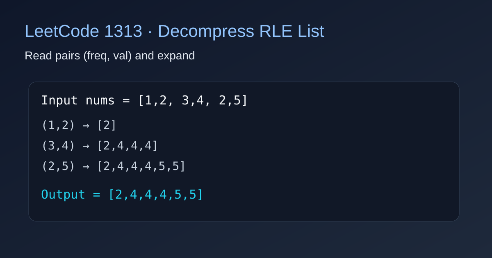

LeetCode 1313: Decompress Run-Length Encoded List (Pair Expansion Simulation)
LeetCode 1313ArraySimulationToday we solve LeetCode 1313 - Decompress Run-Length Encoded List.
Source: https://leetcode.com/problems/decompress-run-length-encoded-list/

English
Problem Summary
The array nums has even length and represents pairs [freq, val]. For each pair, append val exactly freq times. Return the decompressed array.
Key Idea
Scan nums two elements at a time. Treat index i as freq and i+1 as val. Then push val into the answer list freq times.
Algorithm
1) Initialize an empty answer list.
2) For i = 0, 2, 4, ...: read freq = nums[i], val = nums[i+1].
3) Repeat freq times: append val.
4) Return the answer as an array.
Complexity
Let m be output length. Time complexity is O(m); extra space is O(m) for the result.
Reference Implementations (Java / Go / C++ / Python / JavaScript)
import java.util.*;
class Solution {
public int[] decompressRLElist(int[] nums) {
List out = new ArrayList<>();
for (int i = 0; i < nums.length; i += 2) {
int freq = nums[i], val = nums[i + 1];
for (int k = 0; k < freq; k++) out.add(val);
}
int[] ans = new int[out.size()];
for (int i = 0; i < out.size(); i++) ans[i] = out.get(i);
return ans;
}
} func decompressRLElist(nums []int) []int {
ans := make([]int, 0)
for i := 0; i < len(nums); i += 2 {
freq, val := nums[i], nums[i+1]
for k := 0; k < freq; k++ {
ans = append(ans, val)
}
}
return ans
}class Solution {
public:
vector decompressRLElist(vector& nums) {
vector ans;
for (int i = 0; i < (int)nums.size(); i += 2) {
int freq = nums[i], val = nums[i + 1];
while (freq--) ans.push_back(val);
}
return ans;
}
}; class Solution:
def decompressRLElist(self, nums: List[int]) -> List[int]:
ans = []
for i in range(0, len(nums), 2):
freq, val = nums[i], nums[i + 1]
ans.extend([val] * freq)
return ansvar decompressRLElist = function(nums) {
const ans = [];
for (let i = 0; i < nums.length; i += 2) {
const freq = nums[i], val = nums[i + 1];
for (let k = 0; k < freq; k++) ans.push(val);
}
return ans;
};中文
题目概述
给你一个偶数长度数组 nums，每两个数表示一组 [freq, val]。对每组，把 val 重复添加 freq 次，最终返回解压后的数组。
核心思路
按步长 2 扫描数组：nums[i] 是频次，nums[i+1] 是值。然后把该值追加 freq 次即可。
算法步骤
1）初始化结果数组。
2）每次读取一对 (freq, val)。
3）循环 freq 次把 val 放入结果。
4）返回结果数组。
复杂度分析
设解压后的长度为 m，时间复杂度 O(m)，额外空间复杂度 O(m)。
参考实现（Java / Go / C++ / Python / JavaScript）
import java.util.*;
class Solution {
public int[] decompressRLElist(int[] nums) {
List out = new ArrayList<>();
for (int i = 0; i < nums.length; i += 2) {
int freq = nums[i], val = nums[i + 1];
for (int k = 0; k < freq; k++) out.add(val);
}
int[] ans = new int[out.size()];
for (int i = 0; i < out.size(); i++) ans[i] = out.get(i);
return ans;
}
} func decompressRLElist(nums []int) []int {
ans := make([]int, 0)
for i := 0; i < len(nums); i += 2 {
freq, val := nums[i], nums[i+1]
for k := 0; k < freq; k++ {
ans = append(ans, val)
}
}
return ans
}class Solution {
public:
vector decompressRLElist(vector& nums) {
vector ans;
for (int i = 0; i < (int)nums.size(); i += 2) {
int freq = nums[i], val = nums[i + 1];
while (freq--) ans.push_back(val);
}
return ans;
}
}; class Solution:
def decompressRLElist(self, nums: List[int]) -> List[int]:
ans = []
for i in range(0, len(nums), 2):
freq, val = nums[i], nums[i + 1]
ans.extend([val] * freq)
return ansvar decompressRLElist = function(nums) {
const ans = [];
for (let i = 0; i < nums.length; i += 2) {
const freq = nums[i], val = nums[i + 1];
for (let k = 0; k < freq; k++) ans.push(val);
}
return ans;
};
Comments